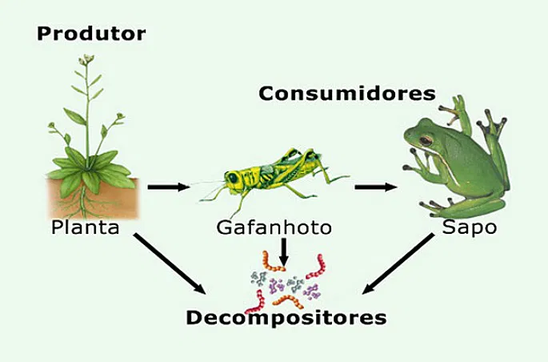

Ecologia
Conceitos Básicos
Espécime: indivíduo
População: conjunto de indivíduos da mesma espécie no mesmo local e tempo
Comunidade: conjunto de populações de espécies diferentes no mesmo local e tempo
Ecossistema: conjunto de comunidades e fatores abióticos no mesmo local e tempo
Habitat: "casa" de uma espécie
Nicho Ecológico: estudo do comportamento de uma espécie em seu habitat
Dinâmica Populacional
Densidade populacional: Número de indivíduos dividido pela área ou volume
Natalidade: número de nascimentos
Mortalidade: número de mortes
Imigração: entrada de indivíduos
Emigração: saída de indivíduos
Crescimento absoluto: (Nº final - Nº inicial) / Tempo
Crescimento relativo: Crescimento absoluto / Nº inicial
Curva de Crescimento Populacional
Potencial Biótico: ambiente ideal para o crescimento populacional
Resistência Relativa: fatores que limitam o crescimento da população
Crescimento Real: crescimento da população em um ambiente real
Carga Biótica Máxima: número máximo de indivíduos que um ambiente pode suportar
Cadeias e Teias Alimentares
Cadeia Alimentar: sequência de seres vivos em que um serve de alimento para outro
Teia Alimentar: interligação de várias cadeias alimentares
Fluxo de Energia: unidirecional

Produtores: seres que produzem seu próprio alimento, como plantas, bactérias e algas
Consumidor Primário: animais herbívoros
Consumidores Secundário, Terciário, etc.: animais carnívoros
Decompositores: transformam matéria orgânica em nutrientes para os produtores